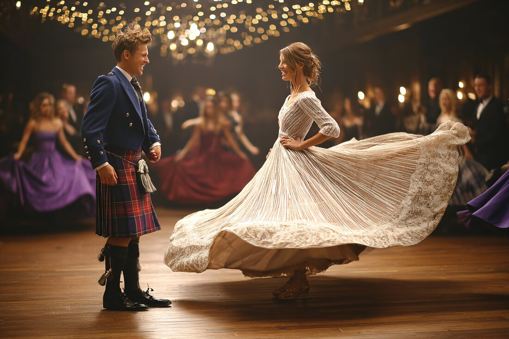
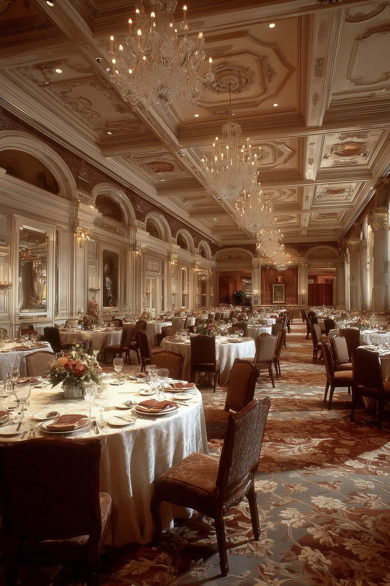

An Evening of Dancing & Finery
The Tartan Ball is our most elegant night of the year: a grand ballroom, a turn around the floor, and the warmth of old friends. Formal attire with a Celtic touch carried the room: a sash, a tartan, a kilt, or the sharpest black-tie green.
From the first waltz to the last reel, it was a night to dress up, dance, and celebrate together.

The Setting
Candlelight and chandeliers in a grand Tampa ballroom: fine dining, music, and the ceremonial crowning of our new King & Queen.
☘ Become a Member
From the Floor
Higgins Hall, October 24, 2026